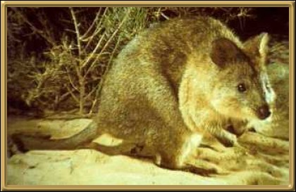
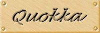

The quokka is found only on Rottnest Island and is more like a pint-sized kangaroo than a rat. Rottnest itself was named after the Quokka which was originally mistaken for a large rat. The current population is estimated to be around 10,000. The Quokka is likened to the forest wallabies and tree kangaroo's of eastern Australia. Aboriginals originally called the Quokka the 'Bangeup'.
Photographer: Unknown